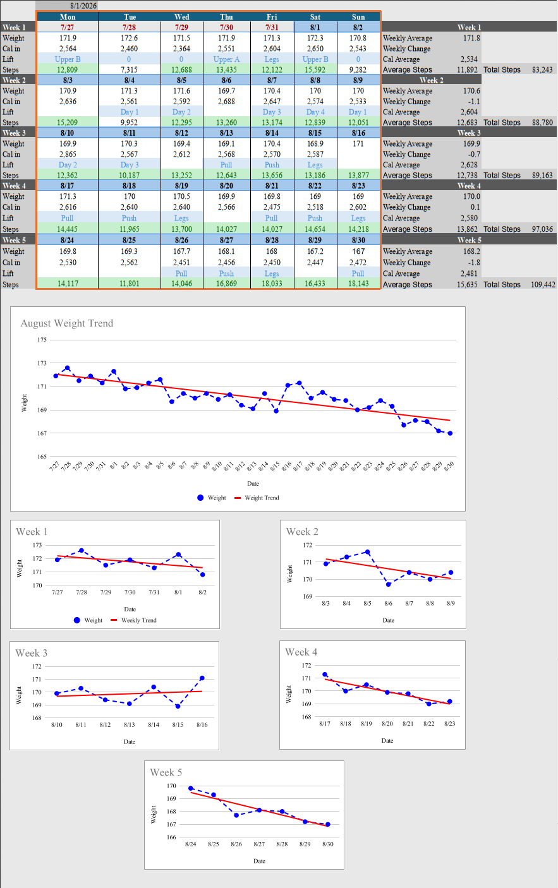

Where This Picks Up
Base Habits covers the three habits you're building: weigh in daily, hit your calorie target, walk your steps. This page covers how you actually execute them for the next two weeks.
Two weeks is the window. Nothing gets adjusted, nothing gets changed, until it's done. This page walks you through what to set up first, how to plan your food, and how to log it so you make it through both weeks with real data instead of a guess.
Expect most of our communication to happen during this phase. You're going to have questions, plenty of them, and that's normal. Ask them as they come up instead of sitting on them until your next check-in.
Why Two Weeks
We don't touch your numbers again until two full weeks have passed since the last change.
It takes two solid weeks of consistency to see what a change actually does to your weight.
If we change your calories, your steps, and your food all on the same day, and the scale moves a week later, we have no idea which one of those did it. Stack enough changes on top of each other and you lose the ability to tell what's working and what isn't.
So the rule is simple. After any change, you give it two full weeks before we touch it again. That's true on day one, and it's true for every adjustment after.
One change. Two weeks. Then we look at the data.
Set Up Your Tools
Before anything else, get your tracking spreadsheet and your app set up.
You'll get a shared spreadsheet from me. Log four things every day:
- Weight
- Calories
- Workout
- Steps
It's organized week by week, Monday through Sunday. At the end of each week, it calculates:
- Weekly average weight
- Weekly change from the week before
- Average calories
- Average Steps
- Total Steps
You don't do any of that math yourself.
It also has graphs built in. One plots your weight across the whole month with a trend line, so you can see which direction you're actually headed instead of reading into a single day. Each week also gets its own smaller chart with its own trend line, so you can watch that week specifically as it happens.

I can show you how to add the spreadsheet to your homescreen of your phone so it is easily accessible.
Pick a Tracking App
You need an app that tracks calories and macros, has a real food database, and scans barcodes.
I use MacroFactor. This is not the only option, and you don't have to use it. It's what I personally use and what I recommend if you want the best experience. I have no affiliation with MacroFactor, but I love their product and trust the people responsible for creating it.
| Plan | Price |
|---|---|
| MacroFactor, monthly | $11.99/mo |
| MacroFactor, yearly | $71.99/year ($5.99/mo) |
| MacroFactor + MacroFactor Workouts bundle, yearly | $89.99/year |
MacroFactor has an AI feature built in. You don't need to rely on it. Learning to read labels and log on your own beats leaning on it. In general, I would say not to trust AI food tracking. You could literally hide a candy bar between two slices of bread and it would not know. The only situation I use the AI feature for is when I am at a restaurant, I open a burger up showing everything in it, take a picture and add a description as accurately as I can about what is on the burger. But for 99% of cases, weighing your food by the gram is the ideal tracking method.
If you'd rather not pay for a tracking app, Cronometer is a solid free option. The free version tracks calories and macros, scans barcodes, and pulls from a large, accurate food database. No subscription required for the basics you need here.
Walkthrough of setting up and using MacroFactor, screen recording.
Whichever app you pick, it needs to do three things: track calories and macros, have a food database you can trust, and scan barcodes. Anything that does those three will work.
Plan Your Food and Build Your Grocery List
Know what you're eating before you're standing in the kitchen hungry.
Base Habits already covers the grocery basics. For these two weeks, go a step further. Plan your meals out, then build your list around them.
Meal prep works best. Cook a batch of protein, chicken is the easiest, portion it into containers with your carb source measured out. Add a low calorie sauce you actually like so you don't get bored of it by day three. Personally, I always have three meal prep containers ready for each day. They contain 120g of chicken breast, 130-160g of jasmine rice, and 40g of sugar free barbecue sauce. This is what I call my base meal. I eat one for breakfast, first lunch, and second lunch. For dinner I usually eat 5 whole eggs with some rice. The remaining carbs for the day go before my workout in the form of fast digesting carb sources. This is what works for me, it does not have to be what you do. But I highly suggest building your base meal so that the majority of your meals are portioned to cover 80-100% of your protein and 80% of your carbs.
If you want help figuring out exact portions for your containers, ask me and I'll walk you through it.
Hit Your Steps
10,000 steps a day is the gold standard. Log your actual daily total every day in your spreadsheet.
Base Habits already covers why steps matter. For these two weeks, the number is 10,000, every day, logged. That being said, 10,000 does not work for everyone. Some people need more and some people need less. If you have no injuries or issues that would prevent you from reaching 10,000 each day, shoot for 10,000. Just try it for two solid weeks. I do have a client that averages 2000 to 4000 steps daily and she is making great progress. Personally, I need 12,000-18,000 with my current calorie intake to really see the scale move. So there is some nuance to this, but higher step count leaves room for more food with little increased physical demand.
Most people burn 30 to 60 calories per 1000 steps. This may seem like small numbers, but at the end of the week that can account for 2100-4200 calories burned just through steps alone.
For the busy people out there, how can you get more steps?
Well most people can walk 1000 steps in ten minutes. Parking further away from work or a store helps, going on walks any chance you get, always walking when taking a phone call, or just doing extra chores around the house. There are countless ways you can squeeze in more steps. Find what fits your schedule and plan your day around getting more steps. This needs to be a priority for you, but it does not need to dominate your schedule. I prefer to knock out as many steps as I can before noon, this way I have no excuse for not getting my steps in.
How to Log It
There are two ways to get through a day. Both start with logging.
Both approaches require the same thing. You log it. A day you don't log is a day we have no data on.
Disclaimer
I am not a doctor, so if something does not feel right I will always point you towards an expert
What Comes Next
Two weeks of consistent logging gives us real numbers to work with. It also puts you up against a lot of noise: diets with rules, influencers with a program, people telling you it should be faster than this. Debunking covers why most of that noise is built to sell you something, not to help you.